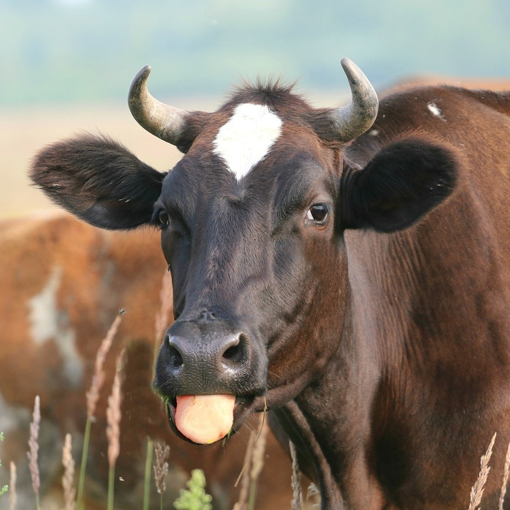
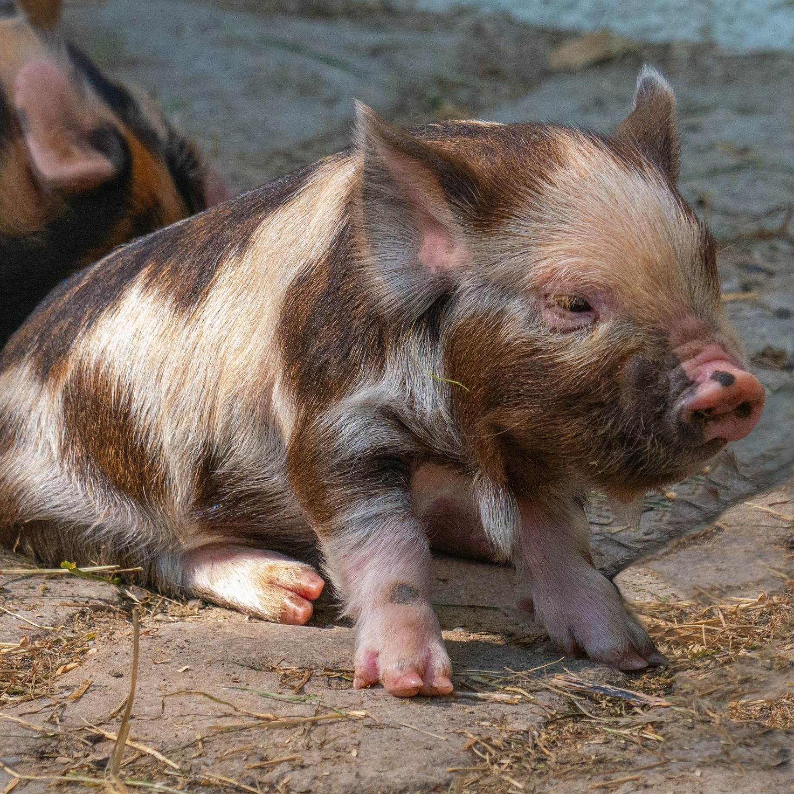
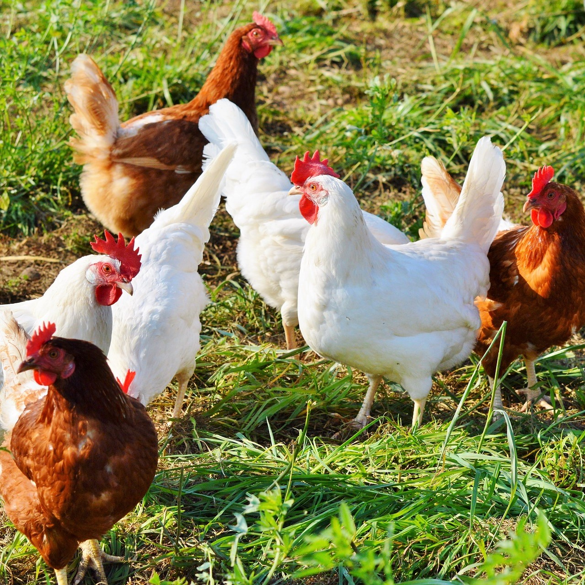
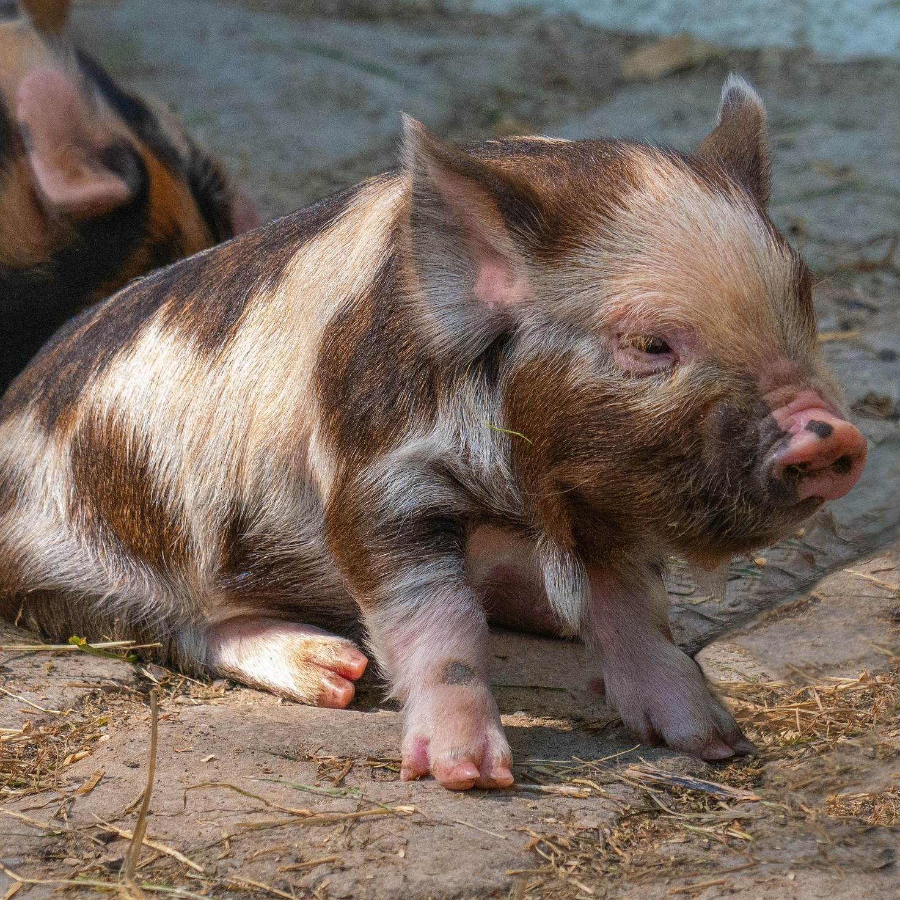
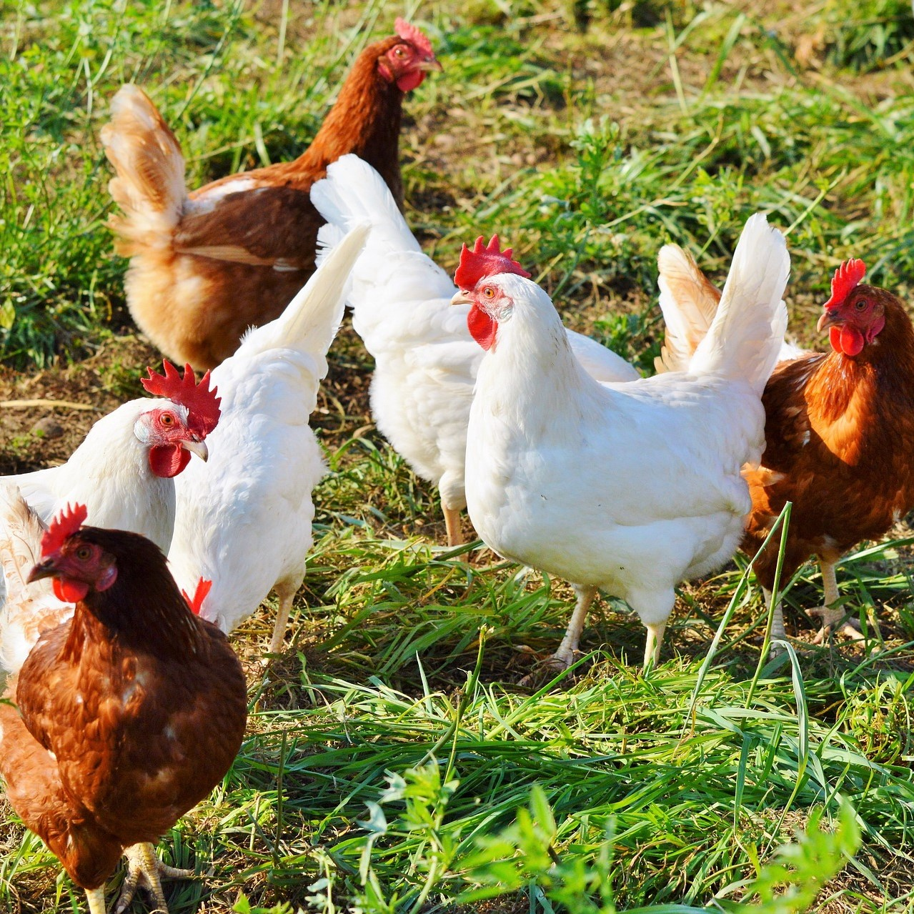
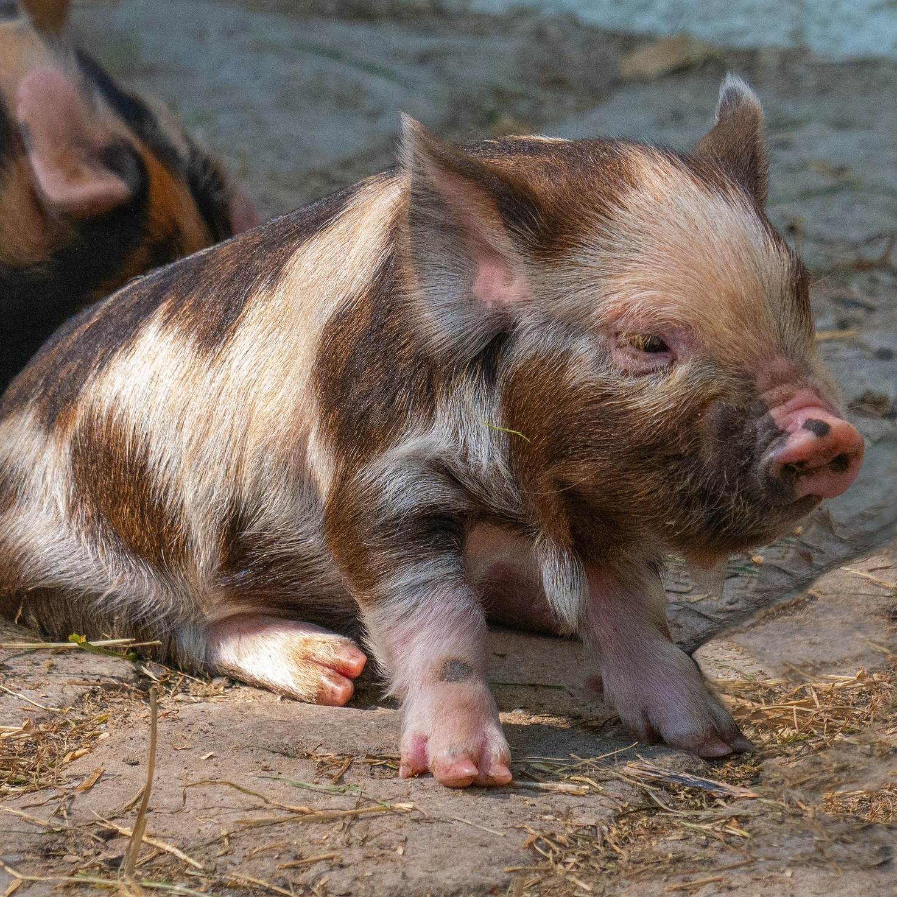
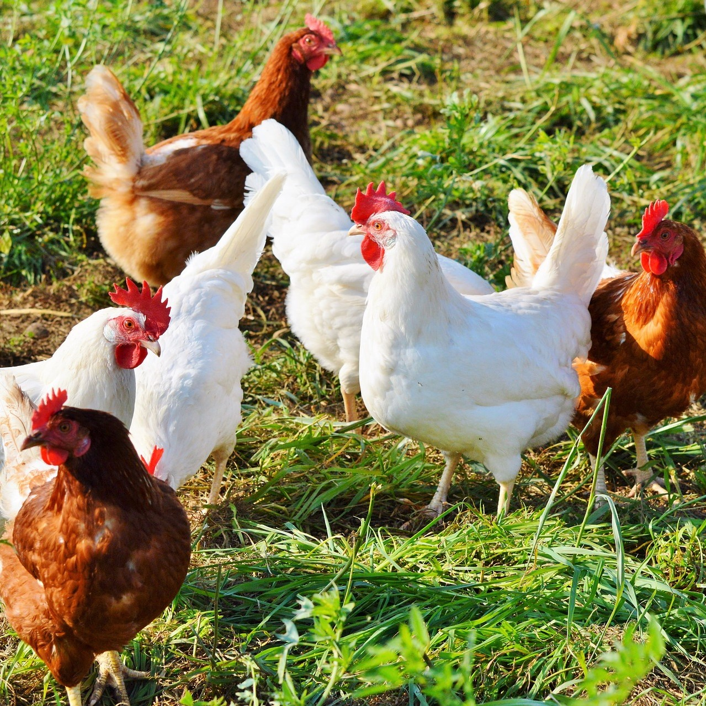

 





En el Santuario cuidamos de 15 vacas y 2 toros. La más viejita de ellas, Dora,
tiene 12 años de edad y 500 kilos de puro amor. Si no hubiese sido rescatada, la habrian asesinado antes
de sus 3años de vida.
Hermoso grupo de 20 amigos ...cabras, chivos y 3 chivitos que nos tienen a todos
enamorados. Ellos se se alimentan de una gran variedad de plantas, tanto herbáceas, como arbustivas y
también árboles...pero sus preferidas son las UVAS!
Hay 23 marranos conviviendo con nosotros en el Santu. Son super juguetones, les
gusta mucho interactuar con las visitas. El que se lleva todas las miradas es nuestro marranito bebé,
Hugo, un cerdito vietnamita de sólo 8 meses de edad.
Amamos amanecer con el canto de nuestros 15 gallos y gallinas. Su Kikiriki nos
marca el inicio del día. Un dato curioso: reconocen su propio nombre y también los nombres del resto del
rebaño. Algunos de ellos aman nadar, sobretodo nuestro amigo José (el Meolans del grupo)